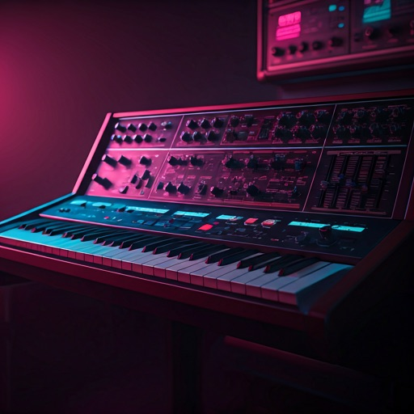

Digital Nostalgia
Redefined
Step into a curated odyssey of the digital era. From the glow of the first vacuum tubes to the neon sprawl of the 80s arcade, Epoch Archive preserves the vibrations of lost silicon culture.

FEATURED ERA
The Synthwave Surge
The heartbeat of the 80s, captured in drifting oscillators and glowing vacuum tubes. Explore the hardware that defined a generation.
settings_input_component
Analog Soul
Preserving the warmth of imperfection in a perfect digital world.
memory
Silicon Roots
Mapping the evolution of 8-bit architecture and the birth of home computing.
waves
Waveforms
Direct access to raw audio samples from the original epoch master tapes.
auto_videocam
Visual Static
Glitch art archives and VHS aesthetic preservation modules.
Stay In the Loop
Receive weekly transmissions from the archive. No noise, just the purest signals from the past.